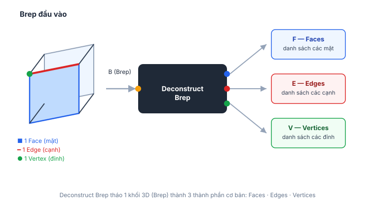

Brep (Boundary Representation) là cách Rhino mô tả 1 khối 3D thông qua các mặt bao quanh nó. Deconstruct Brep "tháo rời" khối đó ra thành danh sách các Mặt (Face), Cạnh (Edge) và Đỉnh (Vertex) để mình lấy riêng từng phần ra xử lý — ví dụ chỉ lấy 1 mặt để làm Boundary cho Voronoi, hoặc lấy các cạnh để offset.
| Cổng | Loại dữ liệu | Ý nghĩa |
|---|---|---|
| B (Brep) | Brep | Khối 3D cần tháo rời (input) |
| F (Faces) | Surface, danh sách | Các mặt tạo nên khối |
| E (Edges) | Curve, danh sách | Các cạnh tạo nên khối |
| V (Vertices) | Point, danh sách | Các đỉnh tạo nên khối |

Pattern Voronoi xoắn ốc trong project này làm việc chủ yếu ở mặt phẳng 2D (Line → Polar Array → Maelstrom → Divide Curve) nên ít cần Deconstruct Brep trực tiếp. Lệnh này hữu ích hơn khi phân tích khối 3D của "vành xe Voronoi" (video showcase) — ví dụ lấy Surface bao ngoài của vành xe làm Boundary cho Voronoi 3D.